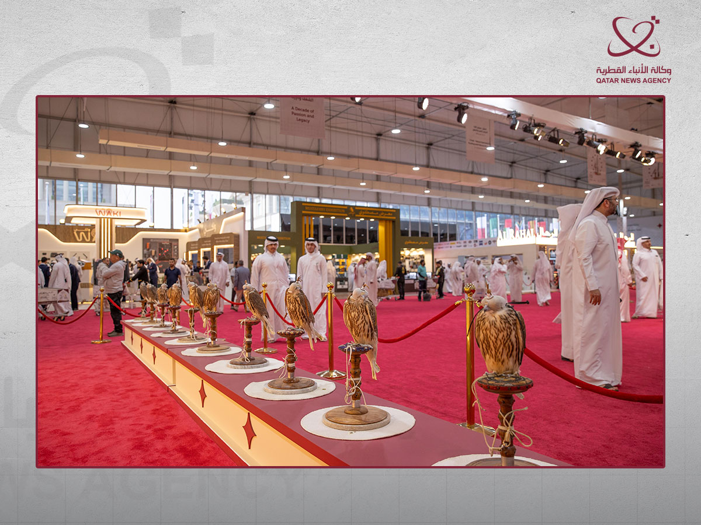

Doha — Sayd
Voir l’album photo de Suhail 2026 : faucons, visiteurs et visages du salon →
La dixième édition du Salon international de la chasse et des faucons de Katara, « Suhail 2026 », s’est achevée à Doha après cinq jours et plus de 80 000 visiteurs. Des entreprises et organismes spécialisés y ont largement participé. Le salon achève sa première décennie en s’imposant comme l’un des grands rendez-vous régionaux des amateurs de chasse, de fauconnerie, de maqnas — sorties de chasse dans le désert — et de voyages terrestres.
Cette édition s’est tenue du 8 au 12 septembre sous le slogan « Une décennie de passion et de patrimoine ». À l’ouverture, la liste comptait 158 exposants, entreprises et organismes, venus de 15 pays. Leurs activités allaient des faucons, de leur équipement et du matériel de chasse au camping, à l’aménagement de véhicules, aux nouvelles technologies et aux services logistiques.
Suhail ne se résume plus à la vente de fournitures de chasse. La dixième édition a présenté plus de 20 innovations et inventions liées à la chasse, au tir et au voyage, signe d’un marché spécialisé où les technologies modernes rencontrent les pratiques héritées du passé.
Les faucons au cœur du salon
La vente aux enchères de faucons est restée l’un des principaux attraits du salon pour le public et les fauconniers. Une sélection de faucons remarquables et rares était proposée à des acquéreurs en compétition. Mohammed ben Abdelatif Al-Misnad, vice-président du comité supérieur d’organisation, a décrit la vente comme l’une des activités majeures de Suhail et rappelé que l’édition coïncidait avec le début d’une nouvelle saison de fauconnerie et de maqnas.

Les salles du salon offraient un large panorama de la chasse contemporaine : faucons, matériel d’entraînement et de soin ; équipement pour les excursions et les camps en plein air (kashtat) ; aménagement de véhicules ; produits pour chasseurs et fauconniers ; ainsi que métiers d’art et artisanat inspirés du désert et de la chasse.
La dimension environnementale était également présente à travers plusieurs participations et expériences, notamment autour de la chasse durable. Le Département des antiquités de Qatar Museums a profité de la présence des amateurs du désert pour sensibiliser à la protection des sites archéologiques pendant les activités de plein air.
Du loisir à un marché spécialisé
Les chiffres de Suhail témoignent de l’expansion de l’économie de la chasse et de la fauconnerie dans la région. Le directeur du salon, Abdelaziz Al-Bu Hashem Al-Sayed, a évoqué une activité d’achat soutenue dans les salles. Selon lui, l’objectif dépasse désormais la tenue d’une foire commerciale : il s’agit de consolider un rassemblement spécialisé réunissant amateurs, entreprises et acteurs intéressés de plusieurs pays.

Cette expansion se voit aussi dans la diversité des participants. Aux entreprises spécialisées se sont jointes des institutions proposant des services de transport et d’entreposage, dont Qatar Post. Le salon comprenait aussi des secteurs consacrés à l’aménagement de véhicules, au camping et aux services liés aux faucons et à la chasse. Le fonds « Daem » soutenait l’événement pour la neuvième année consécutive.
À la clôture, DTS a remporté le prix du meilleur stand, tandis que celui du meilleur garage est allé à « Al-Muharrik Al-Sahrawi » (« Le moteur du désert »). Des concours spécialisés portaient notamment sur la confection des chaperons de faucon (baraqi‘) et d’autres éléments de la culture de la fauconnerie.
Les médias, partenaires de Suhail
À la fin de l’édition, Malaka Mohammed Al-Shreem, membre et secrétaire du comité supérieur d’organisation, a souligné le rôle des médias locaux, arabes et internationaux pour faire connaître le salon. Elle a qualifié les médias de partenaires stratégiques dans le renforcement de la présence de Suhail et la présentation du patrimoine qatari dans le monde.
Après dix éditions, une nouvelle étape s’ouvre pour le salon. Le comité supérieur réfléchit déjà à la prochaine édition et souhaite poursuivre le développement de l’événement afin de renforcer sa place de rendez-vous international des fauconniers, des amateurs de chasse et de maqnas et des entreprises spécialisées.
Suhail 2026 clôt ainsi sa première décennie. Les chiffres et la diversité de cette édition donnent toutefois à penser que ces dix premières années ne sont qu’un début.
Source : agence de presse du Qatar (QNA).